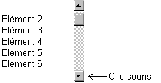
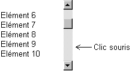
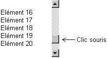

3 types d'action sont possibles sur un ascenseur :
Cliquer sur l'une des deux flèches.
Généralement, ce type d'action provoque le défilement d'un élément de la liste. Le schéma suivant présente la liste obtenue à partir de la liste initiale après 1 clic souris sur la flèche du bas :

Cliquer dans l'une des deux zones de déplacement "page".
Généralement, ce type d'action provoque le défilement de N éléments de la liste, N étant le nombre de lignes d'une "page" (5 dans notre exemple). Le schéma suivant présente la liste obtenue à partir de la liste initiale après 1 clic souris dans la zone de déplacement vers le bas :

Déplacer le curseur.
Ici, le défilement dépend de l'amplitude du déplacement. Par exemple :
